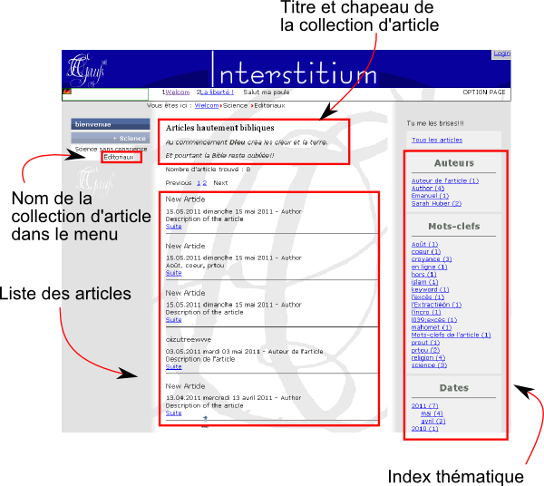
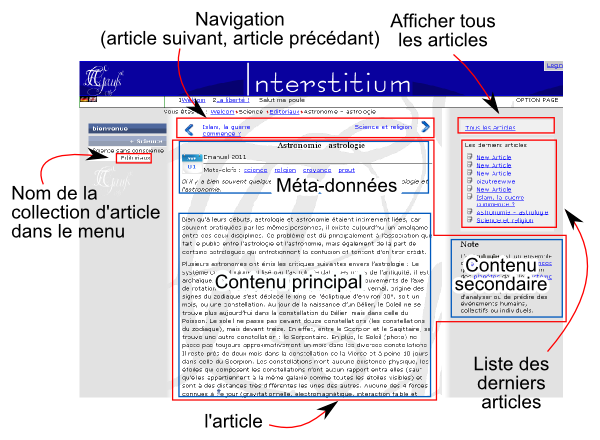

Module article
Le module "article" est basé sur le module "page" : tout comme le module "page", il affiche un menu (à l'occasion des chapitres). La différence est qu'il affiche un index d'articles (la collection d'article) ainsi que les articles choisis. Cependant, dans le menu seul le nom de la collection d'article est affiché.
Ce module est l'idéal pour un éditorial, pour des news...
Format de l'url
Collection d'articles (index)
Quand on appelle la collection d'article qui affiche l'index des articles, l'url ressemble à cela :
www.mon-site.com/fr,article,editorial.html
Dans ce cas, on appelle dans le module "article" la collection d'article nommée "editorial". Le serveur affiche la liste complète des articles (contenu principal) ainsi qu'un index thématique (contenu secondaire). Cet index thématique permet d'afficher par exemple tous les articles contenant le même mot clef ou bien tous les articles écrits par le même auteur.

Article
Quand on appelle un article d'une collection d'articles, l'url ressemble à cela :

Données du module article
Chaque article est sauvegardé dans un fichier .xml identique aux fichiers du module "page".
Les données de la collection d'articles - c'est-à-dire l'index - sont stockés dans un fichier /data/article/nom-de-la-collection/00-index.xml.
Ce fichier est composé des parties suivantes :
- Les métadonnées associées à la collection d'article (tire, auteur, date, mots-clefs, description etc.)
- Le design de la collection d'article
- Les options (en l'occurence combien d'articles doivent être affichés par page)
- Un chapeau qui présente la collection d'article
- La liste des articles existants avec leur métadonnées (titre, mots-clefs, descriptions, auteur, date, droits etc.).
Ce fichier ressemble à cela :